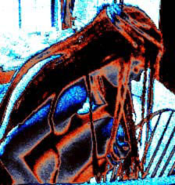

hAND
pRINT
cOLLISION
oF
mE
"sometimes it's hard to keep in touch with yourself when you don't know
where you are. sometimes all you can get are little fragments--clues
pointing to your whereabouts. words or images, and you try frantically
to capture them just as they are, in the hopes that maybe someday
you'll be able to make sense of it all...so you do it--painfully at
times gracefully , awkardly..."

My gothic world, it doesent hear me.
Selfish people, I should have know you would run away from me.
You run into a dead feild, but you can not find your true machree.
Your potent, knowone wants to touch you. Your ugly, that pain inside.
You think your enterprising, your nothing more than a sinful heart.
Your felonious, everything you ever lived for was a mistake, your careless.
Knowone knows me, knowone knows what I feel inside, you cant be me, you will
die from it. Im not sure im real.
You are finished, my work here is done, but I cant win. Im greedy for myself.
This is what I hold within me, you will never understand.
"I'm trying to trust the things that I know about me because these are
things that don't have to be true by anyone else's standards.
I am who I am by my standards." (Kelly, SUPERGIRL)
fin